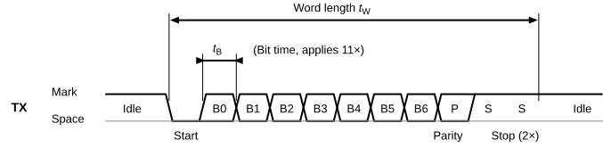
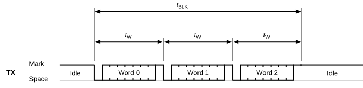
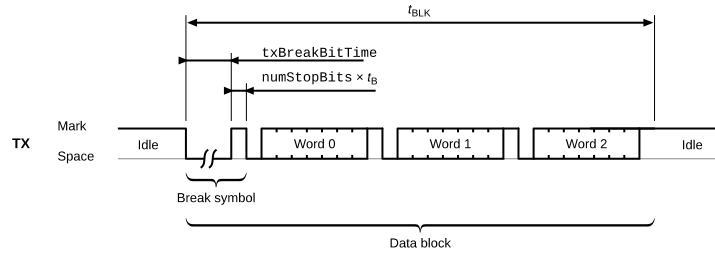
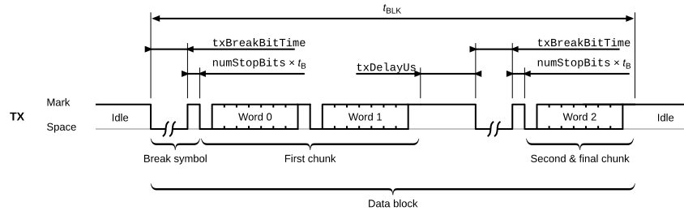
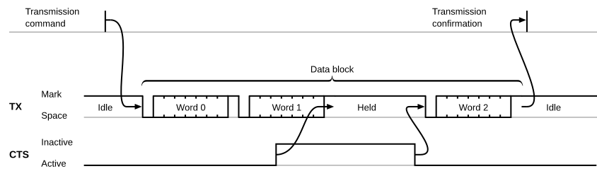
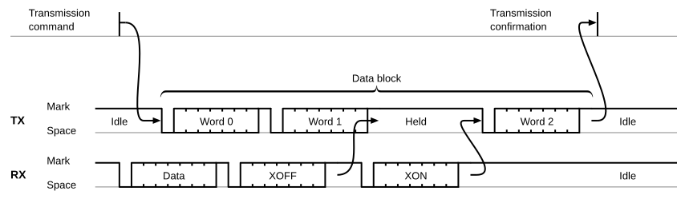
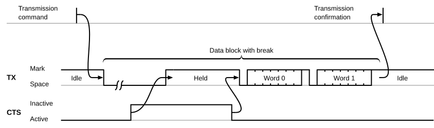

UART Driver
File: endpoints/uart/uart_dev.proto
Package: esb.uart
UART configuration, actions, and notifications for RCP.
A UART endpoint is a universal asynchronous receiver-transmitter (UART). It sends and receives blocks of data
words. The transmitter and the receiver work independently, but both use the same line configuration. The client
configures the endpoint with a fldConfig message before it uses it. The pins TX and RX and, for hardware
flow control, CTS and RTS are assigned to the endpoint with the pin configuration, see rcp.pins.enPinFuncUart.
Transmission timing
The UART sends blocks of words on the pin TX. By default, the idle level is high (called “mark”), and start bits and
breaks are low (called “space”). Setting fldConfig.txPolInv inverts the polarity of the pin, including the data
bits.
A UART word consists of a start bit, data bits, an optional parity bit, and stop bits. The least significant bit is
sent first. The parameters fldConfig.speedBps, fldConfig.numDataBits, fldConfig.parityBit, and
fldConfig.numStopBits configure how the word is structured in time. The figure shows a word with seven data bits,
even parity, and two stop bits.

The bit time is \(t_B\) = 1 / fldConfig.speedBps. The word time \(t_W\) is the time from the start of the start bit to
the end of the last stop bit:
\(t_W\) = (1 + fldConfig.numDataBits + {1 if fldConfig.parityBit is not parityNone} + fldConfig.numStopBits)
× \(t_B\)
The UART sends one block of data words for each fldCmd message. In the simplest case, the command contains only
the data to send, and the UART concatenates all words without a pause between them. The block time \(t_{BLK}\) is
then Length(fldCmd.txData) × \(t_W\):

The client can set fldCmd.txBreak to send a break before the data. A break is a space that lasts
fldConfig.txBreakBitTime bit times. The client should choose a break that is longer than the longest space of
normal data, so that a UART receiver can tell the break from an all-zero word. A mark follows the break and
separates it from the start bit of the first word, which is a space as well. The mark lasts as long as the stop bits
of a word, i.e., fldConfig.numStopBits bit times. The figure shows three words with a break:

The block time is now \(t_{BLK}\) = \(t_B\) × (fldConfig.txBreakBitTime + fldConfig.numStopBits) +
Length(fldCmd.txData) × \(t_W\).
fldCmd.chunkSize splits a block into smaller “chunks”. Each chunk contains that many words, except for the last
one, which is smaller if the block size is not a multiple of the chunk size. With the default chunk size of 0, a
block consists of one chunk. The UART concatenates the words of a chunk as before, adds the pause
fldConfig.txDelayUs between the chunks, and sends the break, if commanded, before each chunk:

In the general case, the block time is
\(t_{BLK}\) = \(t_B\) × (fldConfig.txBreakBitTime + fldConfig.numStopBits) × \(N_{Ch}\) +
fldConfig.txDelayUs / \(10^6\) × (\(N_{Ch}\) - 1) + Length(fldCmd.txData) × \(t_W\)
where \(N_{Ch}\) is the number of chunks in the block: \(N_{Ch}\) = \(\lceil\) Length(fldCmd.txData) /
fldCmd.chunkSize \(\rceil\), or 1 if fldCmd.chunkSize is 0. Without fldCmd.txBreak, the first term is omitted.
Reception
The UART receives on the pin RX while fldConfig.rxEnable is set. The receiver uses the same nominal timing as the
transmitter. Details such as the sampling moment, oversampling, and resynchronization are implementation-specific
(refer to the datasheet of the server).
The receiver validates each word. A word without the expected stop bits is a framing error, and a word with a wrong parity bit is a parity error. The receiver reports both with a notification (criterion 2 below).
To save bandwidth between the client and the RCP server, the receiver buffers the received words before it sends
them. It sends a fldNotif notification to the client as soon as one of six criteria is met. fldNotif.data holds
the accumulated words from the buffer unless stated otherwise. The client should evaluate fldNotif.code to process
the notification correctly.
The receiver checks the criteria in this order:
The endpoint could not process the received data quickly enough and lost data. This can happen when the link between the client and the RCP server is overloaded and notifications cannot be sent as fast as the UART receives words.
fldNotif.codeisntfBufferOverrun.fldNotif.datacan contain the words received after the data loss. If the word received after the loss is corrupted, e.g., by a parity error,fldNotif.datais empty and another notification follows immediately, according to criterion 2. Likewise, if a break follows the overrun immediately, a second notification with empty data and the codentfFlushedfollows immediately.The receiver detects a parity error or a framing error.
fldNotif.codeisntfCsumErrororntfFrameError, and the last byte offldNotif.datais the erroneous word, which is likely corrupted.The receiver detects a break.
fldNotif.codeisntfFlushed, and the last byte offldNotif.datais the last word received before the break.fldNotif.datais empty if the receiver got no word before the break. The minimum duration of a space that the receiver detects as a break is implementation-specific (refer to the datasheet of the server).The number of words in the buffer equals or exceeds
fldConfig.rxLength. This criterion is met intrinsically if the buffer is full.fldNotif.codeisntfSuccess.The last word in the buffer was received more than
fldConfig.rxTimeoutBitTimebit times ago, andfldConfig.rxTimeoutEnableis set.fldNotif.codeisntfSuccess.The last received word equals
fldConfig.rxTerminalByte, andfldConfig.rxTerminalByteEnableis set.fldNotif.codeisntfSuccess, and the last byte offldNotif.datais the terminal byte.
Reception filtering
The receiver can filter the received data, so that the client receives only fragments of a data stream.
By default, the receiver collects all received words. Setting fldConfig.rxStartByteEnable makes the receiver
ignore incoming data until it correctly receives the start byte fldConfig.rxStartByte. The receiver puts the start
byte into the buffer and collects the data again until it receives the terminal byte fldConfig.rxTerminalByte.
After that, it ignores incoming data again until the next start byte.
The receiver treats a start byte that arrives while it is collecting like any other word. It keeps ignoring data when a terminal byte arrives while it is ignoring.
The notifications include the start byte and the terminal byte that change the filtering state. As a consequence,
after the client sets fldConfig.rxStartByteEnable, the first received byte is always the start byte. After a
terminal byte, the next received byte is always a start byte.
Filtering affects only the collection of valid data and not the notification criteria above:
A break that arrives while the receiver is ignoring data still causes a notification with the code
ntfFlushed.fldNotif.datais empty, because the receiver has collected no words (criterion 3). A break that arrives while the receiver is collecting causes a separate notification as well.Parity and framing errors are always reported to the client. While the receiver is collecting, the behavior is the same as without filtering, and all bytes in
fldNotif.dataare valid except the last. While the receiver is ignoring,fldNotif.datacontains only the erroneous byte.When the receiver starts ignoring data, it always sends a notification, and the last byte is
fldConfig.rxTerminalByte(criterion 6).
Only correctly received words change the filtering state. Errors have two consequences:
A start byte with a framing or parity error does not start the collection, and the client misses the fragment.
A terminal byte with an error does not stop the collection, and the client keeps receiving notifications that it would rather ignore.
Flow control
The UART supports hardware and software flow control, which can be enabled together.
Setting fldConfig.hwFlowControl enables hardware flow control. The signal CTS needs an input pin
and the signal RTS an output pin.
While CTS is active, the transmitter may send data. Otherwise, it holds the pending data. The transmitter stops per word, not per block, so unfinished commands stay pending as long as CTS is inactive:

The receiver signals through RTS whether it can accept further words. RTS is active after initialization. It becomes inactive when the endpoint cannot guarantee that further incoming words can be processed without data loss. If RTS becomes inactive while a word is being received, the receiver still accepts that word without data loss.
By default, CTS and RTS are active low. fldConfig.hwFlowControlPolInv inverts their polarity.
Software flow control throttles the transmitter only. fldConfig.swFlowControl enables it. It needs no additional
hardware signal and relies on in-band signaling in the data that the UART receives. When the incoming data stream
contains an “XOFF” character (0x13, 19), the transmitter finishes the ongoing word, if any, and stops until it
receives an “XON” character (0x11, 17):

For both kinds of flow control, the transmitter handles a break like a data word. If the transmission is suspended while a break is being sent, the transmitter completes the break and waits before the first data word:

Example
To configure the UART for 115200 bps, 8 data bits, no parity, and one stop bit, to receive lines that end with a line feed, and to send a command line:
seq: 1
dir {
config {
hndl: 7
uart {
speedBps: 115200 numDataBits: 8 numStopBits: 1 parityBit: parityNone
rxEnable: true rxTerminalByteEnable: true rxTerminalByte: 10
}
}
}
dir { action { hndl: 7 uart { txData: "AT\r\n" } } }
The receiver collects words until the terminal byte 0x0A (line feed) and then sends a notification with
fldNotif.code set to ntfSuccess and the received line in fldNotif.data.